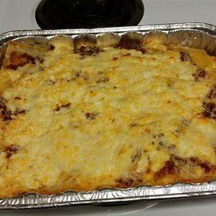

Lasagna

This is a faster, and less expensive lasagna.
This is a cheap and easy recipe for lasagna that your family will love.
Lasagna is usually a time consuming dish to make so you can create
create this any night of the week.
Ingredients
- (16 ounce) package lasagna noodles
- 1 pound lean ground beef
- salt and pepper to taste
- 1 (16 ounce) jar spaghetti sauce
- 1 clove garlic, minced
- ½ pound shredded mozzarella cheese
- ½ pound shredded Cheddar cheese
- 1 pint ricotta cheese
Instructions Checklist
- Step 1
Bring a large pot of lightly salted water to a boil. Add pasta and cook for 8 to 10 minutes or until al dente; drain.
- Step 2
Preheat oven to 350 degrees F (175 degrees C). In a large skillet over medium-high heat, brown beef and season with salt and pepper; drain. Stir in spaghetti sauce and garlic and simmer 5 minutes.
- Step 3
In a medium bowl, combine mozzarella, Cheddar and ricotta; stir well. In 9x13 inch pan, alternate layers of noodles, meat mixture and cheese mixture until pan is filled.
- Step 4
Bake in preheated oven for 30 minutes, or until cheese is melted and bubbly.